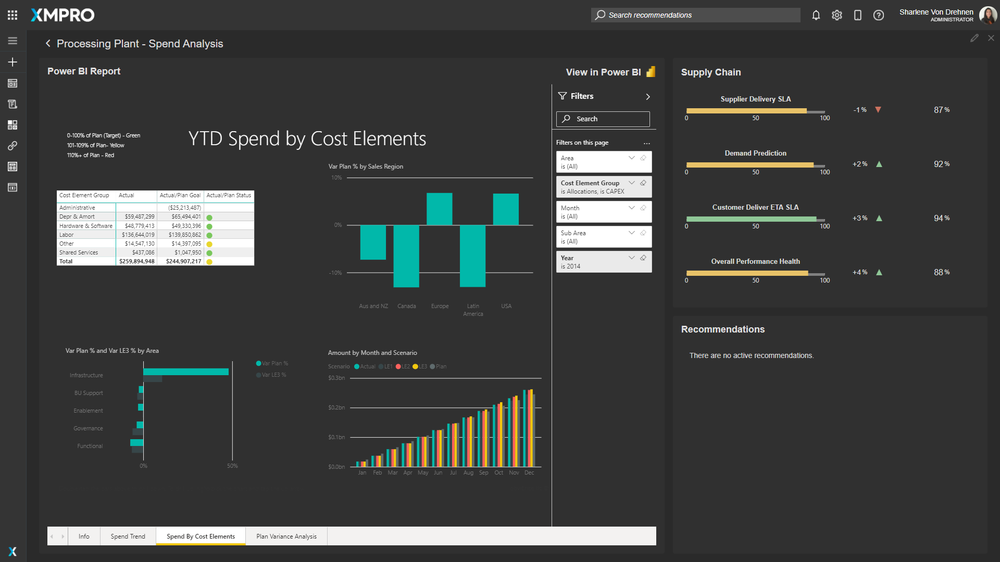
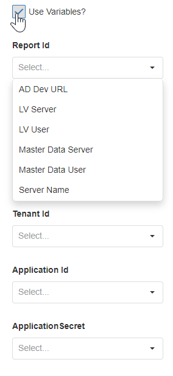

Power BI
Power BI is a control that allows you to embed reports inside your application. Power BI is a business analytics service that provides a platform where users can create interactive visualizations of data that can be used on reports or event boards. For more details, visit the official Microsoft website.

Power BI Properties
Appearance
Common Properties
Options for the appearance include its visibility.
See the Common Properties article for more details on common appearance properties.
Behavior
Use Variables
This allows you to choose between manually entering a value for the Report ID or selecting from a static variable. If the Application Mode is set to 'Application', Use Variables will also allow you to select a static variable for the Group Id, Tenant Id, Application Id, and Application Secret.

Report Id
The report Id can be found inside the URL of the report you want to embed. To find the report's Id:
- Sign in Power BI.
- Open the report you want to embed.
- Copy the GUID from the URL. The GUID is the number between /reports/ and /ReportSection. For example, if the url has .../reports/de0db6db-232f-b5b5-1abe1d71da76/ReportSection...., the report Id you would enter is de0db6db-232f-b5b5-1abe1d71da76.
The Report Id property is required for the Power BI Block.
Authentication Mode
There are two options for the authentication mode: user and application.
User authentication is used when you want to embed the report for your organization. The users will be required to sign in and have a Power BI account. This will also require you to have a Power BI embedded license for this.
Application authentification will embed the contents of the Power BI report into the page and the user will not be asked to sign in to view the report. In order to set up application authentication, the group Id, tenant Id, Application Id, and Application secret of your report need to be entered. For more information about where to find the value for these fields, read the official Microsoft Documentation.
If the Authentication mode is set to 'Application', the Group Id, Tenant Id, Application Id, and Application Secret properties are required for the Power BI Block.
Last modified: May 29, 2025